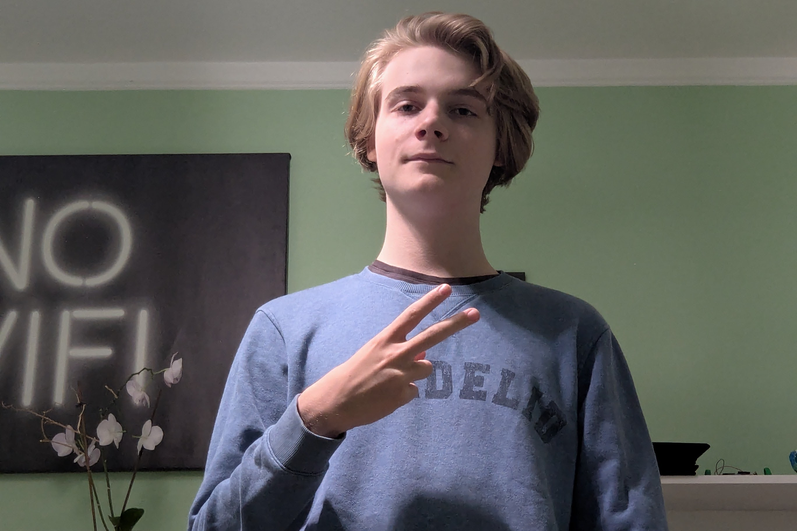

Jag är en teknik elev på Östra Gymnasiet. Jag gillar matte, programmering och SO-ämnen. Denna hemsida är byggd som ett test för hur min kunskap de närmaste dagarna har förbättrats. När jag började kursen Webbutveckling 1 hade jag nästan ingen erfarenhet av HTML, CSS och JS. Jag hade kunskap men ingen erfarenhet. Jag har programmerat lite i python men det var som ett fritidsprojekt. Under pythonutveckling har jag använt AI så fort jag stötte in i ett problem men nu med HTML ska jag inte använda AI tills jag gör slutprojektet. Jag hoppas detta ger mig mer förmåga att kunna implementera vad jag vill utan generativ AI i framtiden.

Jag började programmera i 7an lite innan chatgpt kom ut. Jag började med enkla skrifter på min skoldator med syfte att imponera på föräldrar och lärare. Senare ville jag göra fler grejer och större saker så jag började använda AI. Det var precis efter chatgpt blev stort. Sedan sommaren innan ansåg jag att jag hade förlitat mig för mycket på AI så jag försökte skala ner det. Det var efter det beslutet som jag verkligen kunde använda AI och inte bara låta den göra saker åt mig.
Nu har jag utvecklat allt möjligt, speciellt många Discord botar dock, som en som jag gjorde som kan skriva kommandon på datorn skripten kördes på, ta skärmdumpar, ta bilder med webbkameran, säga saker med TTS genom högtalarna mm.
Jag har länge tyckt det är kul att skapa filmer och kreativt berätta historier. Först började det med Imovie på min mammas ipad och senare när man fick mobil blev det Capcut. Detta är en reklam för ett spel som jag gjorde i en tävling med kompisar där vi tävlade om vem som skulle kunna göra bäst reklam på ett spel på en dags tid.
Jag, Miguel, Tiago, Gabriel och Lucas gjorde under digitalt skapande som slutprojekt en film kring serien Dexter. Filmen filmades mestadels utanför skolan och till stor del också efter skolan. Nu när man tittar tillbaka på den är den lite oförståelig utan kontext men medan vi gjorde den hade vi väldigt kul och det är det som räknas.
Östra Löken startades av mig cirka en månad innan sommar-avslutningen. I de nu (28/8/2025) 6 st upplagorna har tidningen vuxit och etablerats mer. Joar Stange började skriva med mig i andra upplagan och nu har vi blivit uppmärksammade av Teknikprogrammets instagram och Notes. Satirtidningen har också fått 4 insändare av 4 separata personer. Just nu siktar vi på att behålla arbetsprocessen görlig och hoppas också kunna rekrytera en 1a så att tidningen i teorin skulle kunna leva kvar även när jag och Joar har tagit examen.